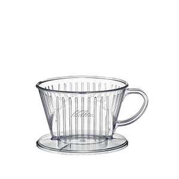

드립커피 소개
드립커피의 시초
독일의 가정 주부였던 멜리타 벤츠(Melitta Bentz)가 터키 커피의 찌꺼기를 걸러내기 위해 종이를 사용하다가, 그 방법을 편리하게 개량해서 깔때기(밀리타 드리퍼)를 만들어 사용한 것이 드립 커피의 시초로 알려져 있다. 그 후 드립 기구들이 일본에 넘어와 개량된 것이 지금의 드립커피가 되었다.
드립커피 소개
분쇄한 커피 빈(Coffee Bean, 커피 콩)을 드립퍼에 담고 온수를 통과시켜 추출하는 커피를 말하는데 기계가 아니여도 사람이 직접 내릴 수 있는 커피 종류 중 하나이다.
드립커피의 특징
프렌치 프레스와 달리 가루가 넘어가지 않는 점은 장점이지만, 에스프레소나 프렌치 프레스와는 달리 종이 필터에 의해서 유분이 거의 깔끔하게 걸러지므로 커피 특유의 향이나 맛이 덜해진다. 진한 맛을 선호하는 사람에겐 추천하지 않는다. 대신 원두의 커핑노트가 명확하게 나뉘는 편이라 가벼운 맛의 커피를 즐길 수 있다.
201858102_임진완
드립퍼의 종류
하리오
원추 모양으로 유리제품으로 유명한 일본 하리오사에서 개발한 드리퍼이다. 나선형 가이드가 드리퍼의 끝 부분까지 있어 물빠짐이 매우 빠른 것이 특징이다. 물빠짐이 빠르기 때문에 커피의 잡맛을 유발하는 타닌 등이 최소한으로 추출되어 맛이 매우 부드러운 편이다.
칼리타
사다리꼴 모양의 드리퍼에서 바닥에 구멍을 3개를 뚫어서 만든 제품이다. 처음 커피가 보급이 되었을 때 가장 많이 쓰였던 드립퍼이지만 내리는 방법이나 추출할 때의 환경을 고려해야해서 내리기 힘든 드립퍼이지만 잘 내리면 다른 드립퍼보다도 맛이나 향이 뛰어나다.
칼리타 웨이브
위의 칼리타에서 멜리타의 영향에서 벗어나고자 새로 만들어진 유형의 오리지널 드리퍼이다. 원추형의 깔때기에 밑면이 평평하고 안쪽에 가로로 많은 주름이 있으며, 전용 필터는 세로로 구불구불한 주름이 접힌 특이한 모습을 하고 있고 추출구는 3개이다.

201858102_임진완
핸드드립에 필요한 도구
그라인더(핸드밀), 드립포트
왼쪽이 그라인더로 커피 빈을 분쇄하도록 하는 장치이다. 오른쪽은 드립포트로 물주전자라고 생각하면 편하다.
드립서버
드립서버는 커피 빈에서 추출하고 나온 커피를 받아주는 도구이다.
드립퍼, 드립필터
드립퍼는 드립필터를 끼우는 곳이면서 드립커피를 어떻게 내릴 지 정해주는 도구이다. 드립필터는 드립퍼의 밑 바닥과 비슷한 보양을 지닌 필터를 의미한다.